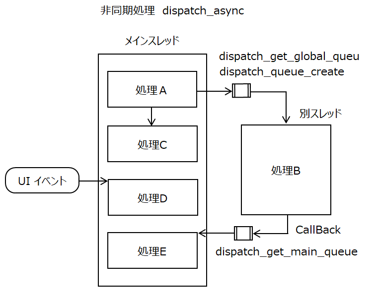
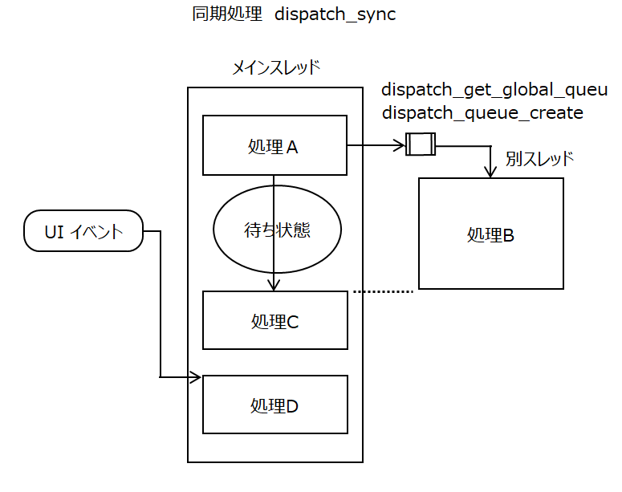
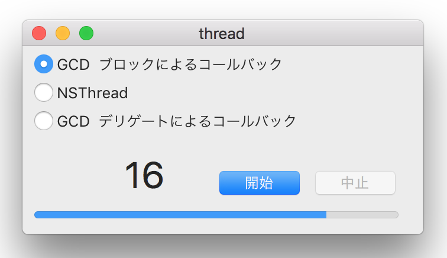
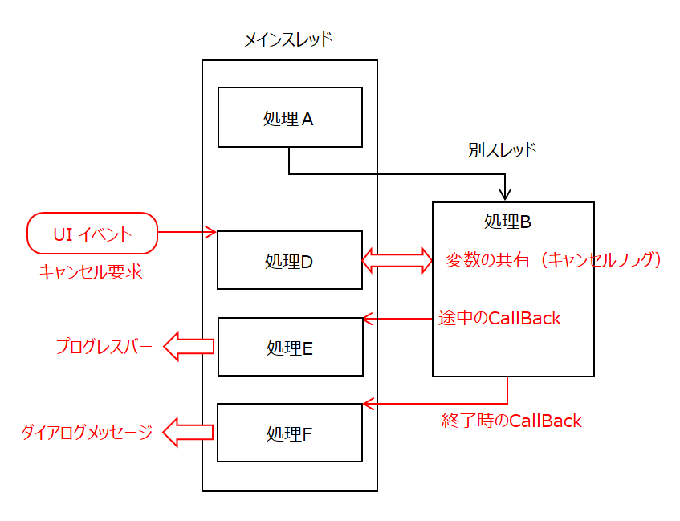
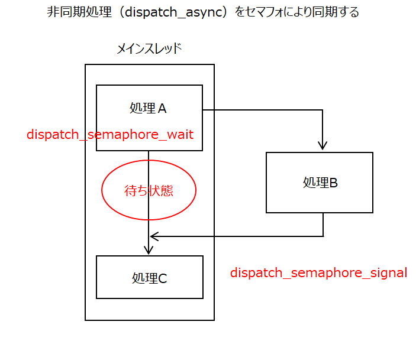
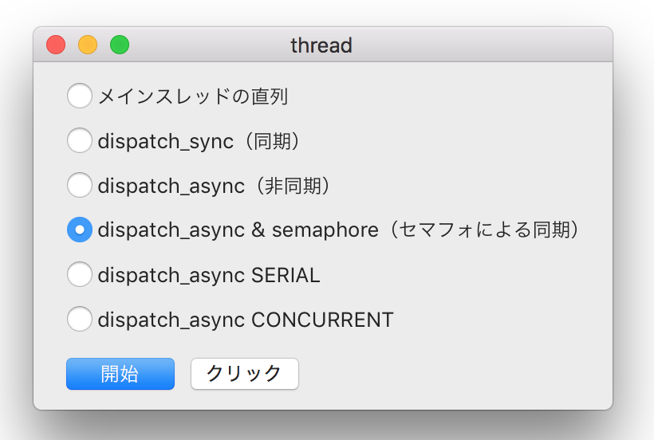

マルチスレッド基礎編
マルチスレッドは、メインスレッッドで行う必要のない、時間のかかるバッチ的な処理をバックグラウンドで行うときに利用する。メインスレッドから別スレッドを起動し、そこで処理を行う。メインスレッドと並行して処理を行うので、効率の良い処理方式となる。メインスレッッドとの関係で、非同期処理と同期処理に分けられる
非同期処理
メインスレッドの処理(A)から、別スレッドの処理(B)を起動する。メインスレッドの次の処理(C)は、処理(B)の終了を待たず、並行してに実行される。起動元がRunLoopであれば、受付たUIイベント(D)も即時に実行される。別スレッドの処理(B)と同期をとりたいメインスレッドの処理(E)があれば、コールバックにより実行する。
メインスレッドとの連携（同期）は、ブロックオブジェクトによるコールバック、デリゲート、セマフォ（後述）といった技法を使うことで実現することができる。

同期処理
メインスレッドの処理(A)から、別スレッドで処理(B)を起動する。メインスレッドの次の処理(C)は、処理(B)が終了するまで待ち状態になる。起動元がRunLoopであれば、受付たUIイベント(D)は、別スレッッドの処理(B)及び、待たされていたメインスレッドの処理(C)が終了するまで待たされる

設計の考え方
UIアプリケーションでは、一般的には非同期処理が望ましい。メインスレッッド（Run Loop）は、イベントドリブンなシステムの本来の目的から、可能な限りアイドル状態になっていることが求められる。同期処理によってメインスレッドが長時間占有されることは避けなければならない。また、同期処理では異常時に処理がフリーズしてしまう危険性も残る。
GCDによりスレッドを起動して処理を実行する方法
GCD(Grand Central Dispatch)のキューイング機能を利用する。アプリケーションはスレッドの種類に応じたキューオブジェクト（処理の待ち行列）を取得し、そこに処理コード（ブロッックオブジェクト）を登録する。システムはキューに入っている処理を取り出し実行する、という流れになる。処理の種類により次のいずれかの関数を使用する。
同期処理
dispatch_sync(queue, ^{ …処理... })
非同期処理
dispatch_async(queue, ^{ …処理... })
引数には、キューオブジェクトと、スレッドで実行する処理コード（ブロックオブジェクト）を記述する。
キューオブジェクトの取得
次の関数を使用してキューオブジェクト（dispatch_queue_t 型）を取得する。
システムが提供するキューで、全アプリケーションが共有して使用する。引数で実行時の優先度を指定する。キュー属性はコンカレントとなる。
アプリケーション独自のキューを作成する。キューの属性としてシリアル（デフォルト） または コンカレントを選ぶことができる。
シリアルキューは、キューに投入した処理は必ず投入順に起動される。コンカレントキューは、キューに投入した処理はランダムに起動する。状態によっては後から投入した処理が先に起動することがある。
メインスレッドキューを取得する。キュー属性はシリアルとなる。
このキューは使用目的が少々異なる。ウインドウアプリケーションのUI操作はメインスレッッドで実行しなくてはならない。そのため、別スレッッドで起動中の処理がUI操作を行うときは、このキューを経由して、メインスレッドで処理を行う必要がある。これを一般的にコールバック処理という。例えば、処理の途中経過をプログレスバーに刻々と表示するというようなときである。
なお、メインスレッッドにおいて、このキューに対して同期処理（dispatch_sync）を呼んでははならない。メインスレッド内でデッドロックとなり処理が固まってしまう。
実装方法
非同期なマルチスレッッド処理を行う
① メインスレッド(メインウィンドウのRun Loop）から別スレッドを起動し、そこでカウンタを１づつアップする処理を繰り返し行う。
② 処理の途中経過として、カウンタの値をWindow上ラベルとプログレスバーにリアルタイムに出力する。
③ 中止ボタンにより処理を途中で中止する。クラスのプロパティにキャンセルフラグを定義し、UIイベントを受け付けるメインスレッドと、カウントアップを行う別スレッッドの両者から参照できるようにする。繰り返し処理は、キャンセルフラグ監視し、キャンセルフラグが設定されたら処理を中断する。


GCD(Grand Central Dispatch) による実装
dispatch_async関数により別スレッドを起動し、非同期な処理を行う。ブロックオブジェクトによるコールバックを行う。
GCD以前の実装方法
別スレッッドで非同期処理を起動するには、NSThreadクラスのdetachNewThreadSelector:toTarget:withObject:メソッドを呼ぶ。起動する処理を引数にSelector型で指定する。
メインスレッッドでコールバック処理を行うには、NSObjectクラスのperformSelectorOnMainThread:withObject:waitUntilDone:メソッッドを呼ぶ。起動する処理を引数にSelector型で指定する。waitUntilDone（BOOL)により処理の同期/非同期を選択できる。
GCD(Grand Central Dispatch) による実装(その２)
コールバックを行うクラス（CountNumber）を作成する。コールバック処理本体はAppDelegateに実装し、delegateにより実行する。
ソースコード
セマフォを組み合わせて同期処理を実現する
GCD(Grand Central Dispatch)が提供する通知機能の一種であるセマフォ(semaphore)を利用する。手順は以下の通り。
① スレッド間の通知のやりとりを管理するセマフォオブジェクトを作成する。
② メインスレッドは別スレッドで処理を起動したあと待ち状態になる。
dispatch_semaphore_wait
別スレッドのメインスレッドへのコールバック、RunLoopが受け付けたイベントの処理も待ち状態となる。
③ 別スレッドは、処理の終了等任意のタイミングで、メインスレッドに対して待ちを解除する通知を送る。dispatch_semaphore_signal
④ メインスレッドは、通知を受け取った位置から以降の処理を再開する。

処理パターンを確認するためのサンプル集
起動したスレッドの種類と処理のタイミング（前後関係）がわかるログを吐き出す。処理の途中でクリックするとログを出力するイベントハンドラを起動する。
（詳細はソースコードを参照のこと）

サンプルプログラムのソースコード
備忘録
(1) メインスレッドの直列処理では、ボタンのenabled属性の更新が遅延する
上記のプログラムは、開始ボタンをクリックした後、ボタンを使えないようにするためグレーアウトしようとしているが出来ない。無効化（enabled属性をNOにする）の効果が現れるのは、次のFor文の終了後になってしまう。UIの実際の更新は遅延するようだ。
このようなことを可能にするには、処理の本体（For文）を別スレッッドで実行する必要がある。
(2) NSAlertクラスでアラートパネルを表示すると、デバッグウィンドウに警告メッセージが表示される
macOS 10.12 のバグのようである。処理自体は問題ない。